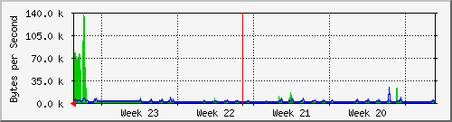

PERISUR-SACMEX
| System:MRTG | Core Perisur |
| Maintainer:dangelesc@finanzas.cdmx.gob.mx | |
| Description: | GigabitEthernet2/35 D.SACMEX-Ref-CB218010071 |
| ifType: | ethernetCsmacd (6) |
| ifName: | Gi2/35 |
| Max Speed: | 12.5 MBytes/s |
| Ip: | 10.1.121.205 (No DNS name) |
Estadísticas actualizadas el Miércoles 16 de Junio de 2021 a las 16:45,
'Core_Perisur.finanzas.df.gob.mx' ha estado funcionando durante 434 days, 21:33:09.
Gráfico diario (5 minutos : Promedio)

|
Máx |
Promedio |
Actual |
| Entrante: |
173.2 kB/s (1.4%) |
69.1 kB/s (0.6%) |
69.1 kB/s (0.6%) |
| Saliente: |
58.3 kB/s (0.5%) |
3447.0 B/s (0.0%) |
3470.0 B/s (0.0%) |
Gráfico semanal (30 minutos : Promedio)
|
Máx |
Promedio |
Actual |
| Entrante: |
160.1 kB/s (1.3%) |
13.4 kB/s (0.1%) |
71.7 kB/s (0.6%) |
| Saliente: |
21.2 kB/s (0.2%) |
1894.0 B/s (0.0%) |
3680.0 B/s (0.0%) |
Gráfico mensual (2 horas : Promedio)

|
Máx |
Promedio |
Actual |
| Entrante: |
137.2 kB/s (1.1%) |
4295.0 B/s (0.0%) |
74.0 kB/s (0.6%) |
| Saliente: |
22.6 kB/s (0.2%) |
1281.0 B/s (0.0%) |
3877.0 B/s (0.0%) |
Gráfico anual (1 día : Promedio)
|
Máx |
Promedio |
Actual |
| Entrante: |
129.0 kB/s (1.0%) |
5010.0 B/s (0.0%) |
37.5 kB/s (0.3%) |
| Saliente: |
38.6 kB/s (0.3%) |
2034.0 B/s (0.0%) |
2346.0 B/s (0.0%) |
| VERDE ### |
Tráfico entrante en Bytes por segundo |
| AZUL ### |
Saliente:going Traffic in Bytes per Second |